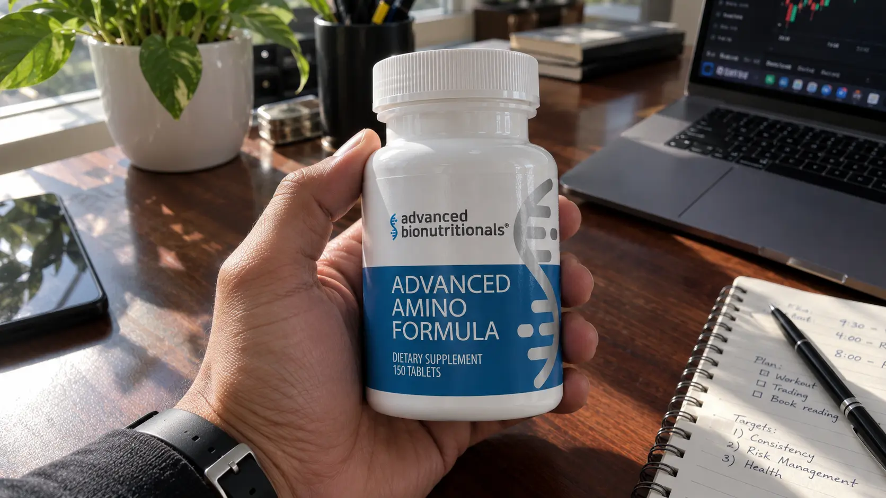
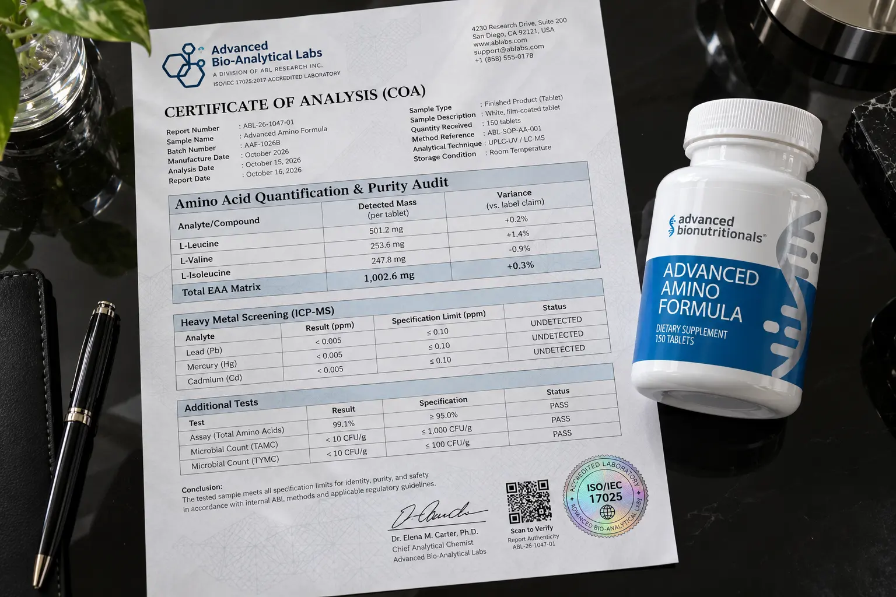

Advanced Amino Formula Review (2026): Warning—Read The "83% Sugar" Alert & Label Audit

Let’s skip the marketing hype about instantly regaining the muscle mass of your 20s.
If you are reading this, you are probably frustrated. You know you need protein to stop age-related muscle loss (sarcopenia), but standard whey protein shakes are destroying your digestion, causing heavy bloating, and making you feel sluggish.
You’ve likely seen the bold claims from Advanced Bionutritionals: Their Advanced Amino Formula supposedly absorbs at 99%, creates zero digestive waste, and stops protein from "turning into sugar" in your body.
But is this real nutritional science, or just a clever sales pitch? We bypassed the polished sales pages, audited the physical 5,000mg supplement label, and found a glaring transparency issue regarding their individual dosages. Here is the unfiltered truth you need to know before you buy.
📌 TL;DR: The Forensic Verdict
Is Advanced Amino Formula a scam? No, but the marketing is highly exaggerated. The claim that "83% of whey turns to sugar" is a manipulation of normal metabolic science. Furthermore, while they boast a massive 5,000mg total blend, they hide the exact milligrams of critical amino acids like L-Leucine behind a proprietary label. However, the core mechanism works. Free-form Essential Amino Acids (EAAs) genuinely bypass stomach digestion, preventing the heavy bloating associated with whey protein. For older adults with failing digestion or those needing rapid muscle-protein synthesis, it remains a highly effective, low-waste alternative—costing only $1.33 per serving and backed by a legitimate 90-day guarantee.
1. ⚠️ Alert: The "83% Whey Sugar" Myth vs. Reality
Before you invest in this formula, you need to understand how the manufacturer is manipulating nutritional science to scare you away from traditional protein.
The Gluconeogenesis Exaggeration
Advanced Bionutritionals heavily advertises that 83% of whey protein is turned into sugar (glucose) and metabolic waste, leaving only 17% for muscle building.
This is a fear-mongering tactic. The body uses a process called gluconeogenesis to convert excess protein into energy if it isn't immediately needed for muscle repair. Framing this as "turning to sugar" implies whey is as bad as eating candy. It is not. Whey remains a highly effective protein source for young athletes.
However, their core premise is actually true: Free-form essential amino acids have a Nitrogen Utilization (NNU) rate of up to 99%. This means almost zero nitrogen waste is filtered through your kidneys, making EAAs vastly superior for aging organs.

2. Why Free-Form Aminos Beat Whey Protein For Adults
If the marketing is exaggerated, why do we still recommend it?
Because as we age, our stomach acid (hydrochloric acid) naturally weakens. When a 50-year-old drinks a thick, 30-gram whey protein shake, the body has to expend massive amounts of energy to break those complex protein chains down into usable amino acids. This leads to the classic "protein bloat", gas, and fatigue.
Advanced Amino Formula contains free-form amino acids. They require zero digestion. The moment you swallow the tablets, the amino acids bypass the stomach's heavy lifting and enter the bloodstream in minutes, directly stimulating muscle protein synthesis without the gut distress.
3. The Physical Label Audit: Missing Milligrams
One of the biggest red flags in the supplement industry is the "Proprietary Blend"—a legal loophole where companies list ingredients but hide the exact amounts. Unfortunately, Advanced Amino Formula uses this exact tactic.

🔬 Verified Formula Audit (Per 5 Tablet Serving)
Here is what the physical label actually tells us compared to clinical standards:
| Amino Acid / Compound | Scientific Function | Exact Dose Disclosed |
|---|---|---|
| Total EAA Blend | The total mass of all amino acids provided in one serving. | Disclosed: 5,000 mg |
| L-Leucine | The primary trigger for mTOR (muscle protein synthesis). | Hidden (Proprietary) |
| L-Valine & L-Isoleucine | Critical for energy production and muscle recovery. | Hidden (Proprietary) |
| L-Lysine, L-Threonine, etc. | Required to form complete structural proteins. | Hidden (Proprietary) |
| Histidine | Modern science classifies this as the 9th essential amino acid. | Missing from Formula |
Note: While hiding the exact L-Leucine dose is frustrating, a total serving size of 5,000mg (5 grams) is a highly potent clinical dose. Most cheap gas-station BCAA pills only offer 1,000mg total.
4. Real Pricing & The 90-Day Guarantee
Let's break down the actual math. Is $39.95 expensive for a supplement?
- 1 Bottle (30 Servings): $39.95 ($1.33 per serving)
- 3 Bottles (90 Servings): $107.85 Total ($35.95 per bottle)
- 6 Bottles (180 Servings): $199.50 Total ($33.25 per bottle) + Free Shipping
The Cost Breakdown: At 5 tablets per serving, one bottle provides 30 complete servings. That breaks down to just $1.33 per day. This is physically cheaper than buying a premium tub of whey isolate, and vastly cheaper than a daily coffee.
The Ultimate Safety Net: Advanced Bionutritionals offers a 90-Day "Down-To-The-Last-Pill" Guarantee. This means you have 3 full months to test the formula. If your recovery doesn't improve or your stomach still feels bloated, you can return the empty bottles for a full refund of the purchase price.
Secure The Official Formula & The 90-Day Guarantee Below:
Go To The Official Secure Checkout >>5. Financial Verdict: Should You Buy It?
Advanced Amino Formula is not a magic steroid. If you don't stimulate your muscles through light resistance training or walking, no amino acid will build muscle out of thin air.
🛡️ Our Purchasing Recommendation
However, if you are over 40 and experiencing muscle atrophy, joint fatigue, or severe digestive issues from normal protein powders, Advanced Amino Formula is a highly practical investment.
We dislike their exaggerated "sugar" marketing and hidden individual dosages. But the fact remains: 5,000mg of free-form essential amino acids for $1.33 a day is an undeniable asset for longevity. It bypasses the stomach, spares the kidneys from nitrogen waste, and directly feeds aging muscles.
With their iron-clad 90-day empty-bottle guarantee, the financial risk is entirely removed. Use the secure official link below to ensure you get the genuine formula.
Secure Your Supply Risk-Free Here >>